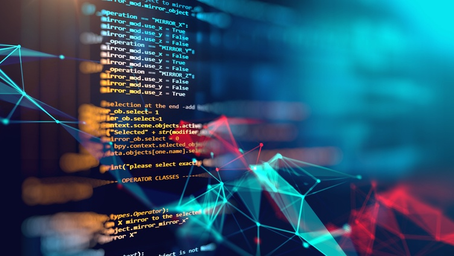

La Escuela 42

La Escuela 42 es un innovador centro de formación en programación que prescinde de profesores y clases tradicionales. Su método se basa en el aprendizaje entre pares, fomentando la colaboración y la autonomía de los estudiantes, quienes se convierten en los principales impulsores de su propio desarrollo.
Gracias a esta filosofía, los participantes adquieren no solo sólidas habilidades técnicas, sino también competencias transversales como la resolución de problemas, el trabajo en equipo y la adaptabilidad. Asimismo, la Escuela 42 se distingue por ser gratuita y abierta a todos, democratizando el acceso a la formación en tecnología y potenciando la creación de talento especializado.
Fecha de publicación: 26 de marzo de 2025
Autor: Alejandro Ortega Ramón
Inteligencia Artificial
La inteligencia artificial (IA) es un campo multidisciplinario de la informática que se dedica al desarrollo de sistemas y tecnologías que imitan la inteligencia humana para realizar tareas complejas. Desde sus inicios, la IA ha evolucionado significativamente, incorporando métodos de aprendizaje automático y procesamiento de datos masivos. Hoy en día, se encuentra en el centro de muchas innovaciones tecnológicas que están transformando la sociedad. Existen dos categorías principales de inteligencia artificial: la IA débil y la IA fuerte. La IA débil se refiere a sistemas diseñados para realizar tareas específicas, como asistentes virtuales que responden preguntas o algoritmos que recomiendan productos en línea. Por otro lado, la IA fuerte, que aún es teórica, implicaría la creación de máquinas que posean una comprensión y razonamiento comparables a los de un ser humano. La aplicación de la IA abarca múltiples sectores. En el ámbito de la salud, por ejemplo, se utiliza para diagnosticar enfermedades y personalizar tratamientos. En la industria, los robots impulsados por IA mejoran la eficiencia en la producción y la logística. Asimismo, en el sector financiero, los algoritmos analizan grandes volúmenes de datos para detectar fraudes y prever tendencias del mercado. Sin embargo, el crecimiento de la inteligencia artificial también plantea desafíos éticos y sociales. La automatización de trabajos puede llevar a la pérdida de empleo en ciertos sectores, y el uso de datos personales plantea cuestiones sobre la privacidad y la seguridad. Por esta razón, es fundamental establecer regulaciones y principios éticos que guíen el desarrollo y la implementación de estas tecnologías. la inteligencia artificial representa una de las innovaciones más prometedoras y, a la vez, desafiantes de nuestro tiempo. A medida que continuamos explorando sus posibilidades, es crucial equilibrar su potencial transformador con una consideración cuidadosa de sus implicaciones para la sociedad.
La inteligencia artificial (IA) es un campo en constante evolución que utiliza diversas tecnologías y lenguajes de programación para desarrollar sistemas inteligentes. Entre los lenguajes más utilizados en el ámbito de la IA se destacan Python, R, Java, C++ y Julia. Python es, sin duda, el lenguaje más popular en el desarrollo de aplicaciones de IA. Su sintaxis sencilla y la amplia disponibilidad de bibliotecas como TensorFlow, Keras y PyTorch facilitan la implementación de algoritmos de aprendizaje automático y redes neuronales. Estas herramientas permiten a los desarrolladores crear modelos complejos de manera eficiente y efectiva. R es otro lenguaje comúnmente utilizado, especialmente en análisis estadístico y visualización de datos. Es muy valorado en la comunidad académica y por los científicos de datos, quienes lo emplean para realizar análisis exploratorios y modelado estadístico. Java, por su parte, es conocido por su portabilidad y rendimiento. Se utiliza en aplicaciones empresariales y en sistemas que requieren un alto grado de escalabilidad. Además, existen bibliotecas como Weka y Deeplearning4j que permiten el desarrollo de soluciones de IA en Java. C++ es un lenguaje de bajo nivel que proporciona un control más granular sobre los recursos del sistema, lo que lo hace ideal para aplicaciones de IA que requieren un alto rendimiento, como los videojuegos y la robótica. Julia, aunque menos conocida, está ganando popularidad gracias a su eficiencia en cálculos numéricos y su capacidad para manejar grandes volúmenes de datos. Es especialmente útil en el ámbito de la investigación científica y el desarrollo de algoritmos de aprendizaje automático. A medida que la inteligencia artificial sigue evolucionando, la combinación de estos lenguajes de programación y sus respectivas bibliotecas permite a los desarrolladores abordar problemas complejos de manera innovadora. La IA no solo está transformando industrias, sino que también plantea desafíos éticos y sociales que deben ser considerados mientras avanzamos hacia un futuro cada vez más impulsado por la inteligencia artificial.
Fecha de publicación: 26 de marzo de 2025
Autor: Alex Gutierrez Quiles